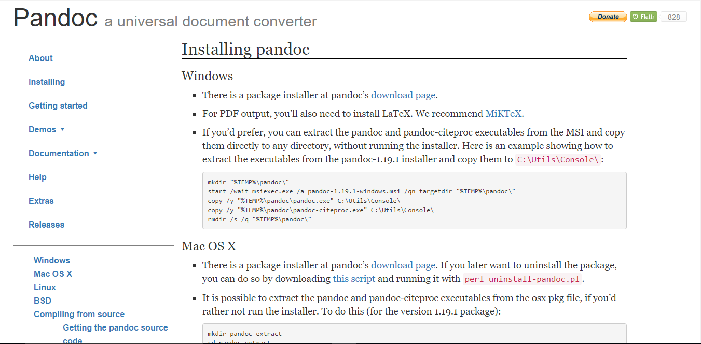
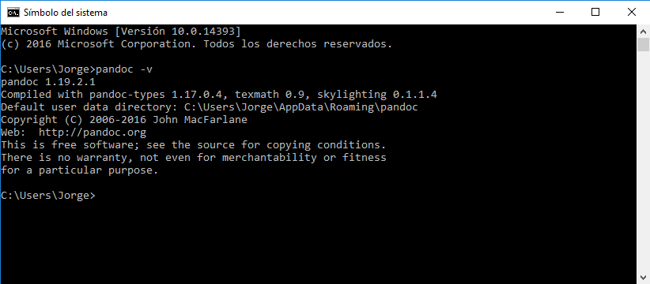

Pandoc
Pandoc es un conversor de documentos libre y de código abierto, mayormente usado como una herramienta de escritura, y es una base para la publicación de flujos de trabajo.
Instalación en Windows 10
Para instalar Pandoc debemos dirigirnos a la página de Pandoc

Una vez accedamos a la página de Pandoc debemos dirigirnos a Installing

y una vez que nos encontremos en esta ventana debemos acceder a la sección para windows y acceder al download page lo que nos redirigirá a un repositorio en github desde el cual podremos descargarnos el installador de windows.

En el repositorio de pandoc seleccionaremos el instalador para windoes en nuestro caso es: pandoc-1.19.2.1-windows.msi.
Al abrir este instalador nos saldrá una ventana como la siguiente:
Dónde debemos aceptar los términos del contrato de licencia y decidir si queremos instalar Pandoc para todos los usuarios del ordenador. Una vez hecho esto le damos a Install y empezará el proceso de instalación de pandoc.
Para comprobar si pandoc se ha instalado correctamente debemos acceder a la terminal de windows (Símbolo del sistema) y ejecutar el comando pandoc -v para ver la versión de pandoc instalada y debería salirnos un resultado similar a este

Uso de Pandoc
Pandoc nos permite convertir ficheros markdown en ficheros HTML, LaTeX y PDF entre otros. Para poder convertir estos ficheros debemos acceder a la terminal de windows de nuevo(Símbolo del sistema) y ejecutar alguno de los siguientes comandos:
De Markdown a HTML
Para realizar esta conversión se debe ejecutar el comando:
pandoc test1.md -f markdown -t html -s -o test1.html
Donde el fichero test1.md es el fichero de origen en markdown y el fichero test1.html es el fichero resultante en HTML.
De Markdown a LaTeX
Para realizar esta conversión se debe ejecutar el comando:
pandoc test1.md -f markdown -t latex -s -o test1.tex
Donde el fichero test1.md es el fichero de origen en markdown y el fichero test1.tex es el fichero resultante en LaTeX.
De Markdown a PDF
Para realizar esta conversion se debe ejecutar el comando:
pandoc test1.md -s -o test1.pdf
DOnde el fichero test1.md es el fichero de origen en markdown y el fichero test1.pdf es el fichero resultante en PDF.